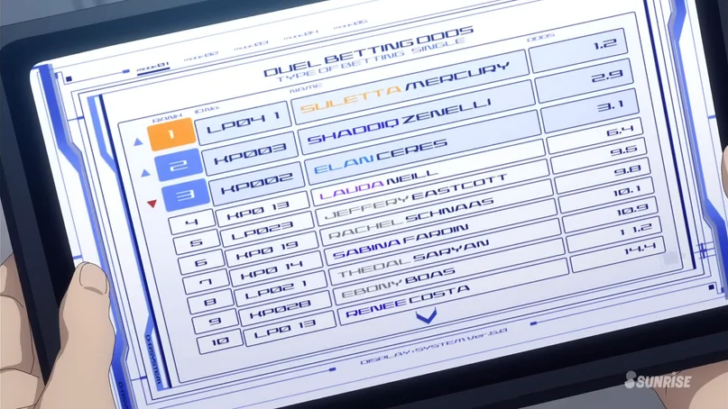

I have no idea what purpose this website will have; I just had a stroke of inspiration. That inspiration is Gundam. The fonts used, the UI, plus some fan-made technical manuals I've seen while browsing.
This all came about from an odd happening: a new coworker is really into Gunpla. I mentioned how I always wanted to dive into it, then he brought in a resin kit for the Aerial from Witch of Mercury. Anyway, long story short, I ended up ordering tools and a Full Mechanics 1/100 Aerial for the resin kit. I still need more tools and supplies, but while browsing, this idea for a blog/personal site came to me. I plan to document my first-ever Gunpla build and other things here. Websites I host tend to die, so we'll see how this goes.
So the idea is to make this like a technical manual with UI elements you might expect on a sci-fi application. Sorry if that sounds vague. Below, you'll find reference materials I've been using.


So far the design is still very much up in the air. I am finding some of my old design obsessions coming through already though, and I can't say I don't like it. The fixed footer which I see as being the navigation, plus the fixed header, are concepts I've loved for my personal sites for what seems an age. What's new is the preference to more angular shapes - I always avoided them in the past, and now I'm falling in love with them. Plus the header shrinks! Though I'm not pleased with the animation, I'd rather it shrank at the same speed with the content scrolling by, I'll probably dive deep into finding a solution to that at a later date.
If you haven't looked at the source yet, you'll note that so far everything here has been achieved through CSS alone. While this in it's self is not impressive, it's incredible to me how far CSS has come, these tringle shapes I have are simply borders with some transparancy slapped on them. I mean really, what's next?
Animations, animations are what's next. I'm excited by the prospect of manipulating quick but smooth animations for content scrolling by. I'm not sure what the limts of this are, or what the limits of my patience for it are. But I'm excited at the prospect none-the-less.
As I fill this page with more content, more things become obvious to me. Like the line break things I have between the images, a simple touch yet so vital. More so what is becoming obvious is the need to find out how to handle CMS for this site. If I intend to make constant posts especially of this size, than I'll need a means to make that as easy as possible. Writing up text and inserting images via Visual Studio Code, is not ideal. I want a cleaner solution.
One piece of worry I have is making the HTML too complex and messy. I reassure myself that any public site is much messier than what I make due to the sheer amount of elements they have! I see how I've made these triangle bits and think it's wasteful, but I have a sneaking suspicion that my site still loads quicker than new Reddit does. I haven't tested this nor do I care enough to, but this is how I justify it.